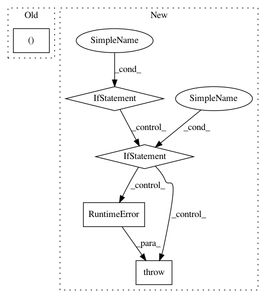

aeb30f6e0bbf78b886312e8e6e21b82ecdf169e5,samples/dqn_tweaks_atari.py,,,#,62
Before Change
tb.log_value("qvals_mean", batches_sum_q0 / batches_count, step=idx)
batches_count = 0
batches_sum_total_reward = batches_sum_q0 = 0.0
tb.log_value("loss", np.mean(losses), step=idx)
tb.log_value("epsilon", action_selector.epsilon, step=idx)
After Change
use_target_dqn = run.getboolean("dqn", "target_dqn", fallback=False)
use_double_dqn = run.getboolean("dqn", "double_dqn", fallback=False)
if not use_target_dqn and not use_double_dqn:
preprocessor = experience.QLearningPreprocessor.simple_dqn(model)
elif use_target_dqn:
preprocessor = experience.QLearningPreprocessor.target_dqn(model, target_net.target_model)
elif use_target_dqn and use_double_dqn:
preprocessor = experience.QLearningPreprocessor.double_dqn(model, target_net.target_model)
else:
raise RuntimeError("Wrong combination of target/double DQN parameters")
// running sums of batch values
// batches_count = 0
// batches_sum_q0 = 0.0
//
// def batch_to_train(batch):
//
// Convert batch into training data using bellman"s equation
// :param batch: list of tuples with Experience instances
// :return:
//
// v0_data = []
// vL_data = []
//
// for exps in batch:
// v0_data.append(exps[0].state)
// vL_data.append(exps[-1].state)
//
// states_t = torch.from_numpy(np.array(v0_data, dtype=np.float32))
// v0 = Variable(states_t)
// vL = Variable(torch.from_numpy(np.array(vL_data, dtype=np.float32)))
// if params.cuda_enabled:
// v0 = v0.cuda()
// vL = vL.cuda()
//
// q0 = model(v0).data
//
// global batches_count, batches_sum_q0
// batches_count += 1
// batches_sum_q0 += q0.mean()
//
// if use_target_dqn and use_double_dqn:
// qL = model(vL)
// actions = qL.data.cpu().max(1)[1].squeeze().numpy()
// qL = target_model(vL).data.cpu().numpy()
// total_rewards = qL[range(qL.shape[0]), actions]
// // only target is in use: use best value from it
// elif use_target_dqn:
// q = target_model(vL)
// total_rewards = q.data.max(1)[0].squeeze().cpu().numpy()
// else:
// q = model(vL)
// total_rewards = q.data.max(1)[0].squeeze().cpu().numpy()
// for idx, exps in enumerate(batch):
// // game is done, no final reward
// if exps[-1].done:
// total_reward = 0.0
// else:
// total_reward = total_rewards[idx]
// for exp in reversed(exps[:-1]):
// total_reward = exp.reward + GAMMA * total_reward
// q0[idx][exps[0].action] = total_reward
// return states_t, q0
reward_sma = utils.SMAQueue(run.getint("stop", "mean_games", fallback=100))
speed_mon = utils.SpeedMonitor(run.getint("learning", "batch_size"))
try:
In pattern: SUPERPATTERN
Frequency: 3
Non-data size: 5
Instances
Project Name: Shmuma/ptan
Commit Name: aeb30f6e0bbf78b886312e8e6e21b82ecdf169e5
Time: 2017-05-22
Author: max.lapan@gmail.com
File Name: samples/dqn_tweaks_atari.py
Class Name:
Method Name:
Project Name: arogozhnikov/einops
Commit Name: 680f4831e6c8f3102be8d99056b746b48ce34051
Time: 2018-09-27
Author: iamfullofspam@gmail.com
File Name: einops.py
Class Name:
Method Name: reduce
Project Name: kymatio/kymatio
Commit Name: b37fdf43bd950c4872d8ea39975d98a1b5d75866
Time: 2019-03-02
Author: github@jan-schlueter.de
File Name: kymatio/scattering2d/backend/backend_torch.py
Class Name:
Method Name: cdgmm